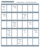

Reports
The Reports screen is a report generator supplied with a set of standard reports which you can use to print reports based on data from SuperOffice CRM. You can customize the search criteria in standard reports and in this way define your own favorite reports.
Tip
See Dashboard for other ways to present SuperOffice data.
Where are my reports?
Open the Reports screen by clicking the Reports button in the Navigator.
Tip
You can go directly to a specific tab in the Reports screen by clicking the word Reports next to the Reports button and then selecting from the list.
Report types
| Icon | Name | Description |
|---|---|---|
| Label | For displaying and printing labels. | |
| List | For previewing and printing ordinary lists. | |
| Group list | For previewing and printing group lists. | |
|  | Calendar | For displaying and printing various calendar views. |
| Cross table | For tables, spreadsheets and charts. | |
| Text export | For exporting to text files. |
Tip
To see what a finished report will look like, follow the procedure under View reports.